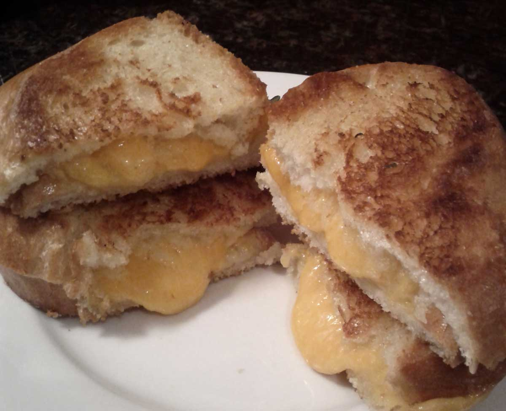

Grilled Cheese
Ingredients
- Two medium-thick slices of fresh French bread
- 2-4 tbsp butter
- Thick slices of your favourite cheeses
Special Equipment
- Cast iron pan
March 24, 2013
You might think you don't need a recipe for a grilled cheese sandwich. I admit, it might be somewhat obvious. But there are so many ways to mess up!
Personally, I think you shouldn't grate the cheese. It introduces too much air into the sandwich. Some people prefer to grate, but I prefer thick slices. I think they are oozier and the sandwich is denser and the cheese loses less of its oil.
Another way you can screw up a grilled cheese sandwich is by using processed cheese. Don't use processed cheese! Processed cheese is a food product made from cheese, but mixed with stabilizers, more milk, and other sorts of fillers, to create a product with "improved melting" and very consistent flavour. By consistent, I mean bland and milky. You should use cheese that tastes like cheese, not milk. Use as many cheeses as you want! My favourites are gruyere, cheddar, and parmesan (not powdered cheese - the block kind!).
You must also use good bread. I like French bread. The crust on the fried surface is delicious. Homemade bread would be excellent, as would sourdough, or ciabatta. Generally, you know you're choosing a good bread if it expires 2 or less days after you buy it (a guideline, not a rule, as some sourdoughs or miches will last longer). For example, Wonderbread will produce an inferior sandwich.
In my opinion, you must use real butter, and lots of it. While you can use margarine or some other butter substitute, I wouldn't recommend it. The flavour will not be nearly the same.
- Liberally butter one side each of two slices of bread. If your butter is hard, microwave in 30-second bursts on low power, stirring in between, until it is soft enough to spread. Be careful - don't melt your butter! If possible, leave the butter on the counter for an hour or two instead for it to get soft, but I usually am too impatient for that and I almost always microwave my butter.
- Cut thick slices of cheese (preferably several cheeses, and not processed cheese!), enough to cover a piece of bread by laying the slices next to each other.
- Heat a pan on medium to medium-low heat. Use a cast iron pan if possible for the best crust.
- Lay one piece of bread butter-side down into the pan, top with cheese to completely cover, and lay a second piece of bread on top butter-side up.
- Try not to move or flip it until the bottom is a dark golden brown. (Of course, you may need to lift to check.) About 5-8 minutes depending how hot your pan is.
- When the bread is well-browned on the bottom, flip and repeat on the other side.
- Eat the best grilled cheese of your life.